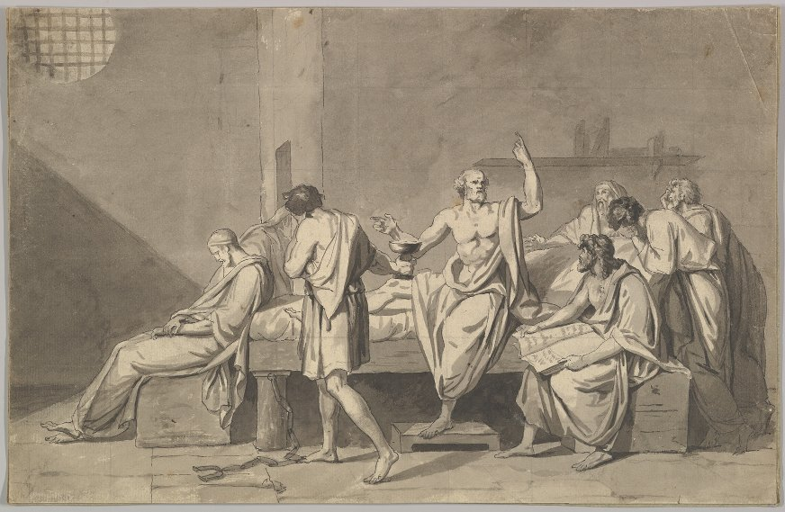

Chapter 1 The Examined Life

Jacques-Louis David, “The Death of Socrates”
The unexamined life is not worth living.
—Socrates
Human beings have a unique capacity, the ability to reflect on what we believe and do. Unlike other animals, we can take a distance from the evidence of our senses and asking ourselves, “Should I trust what I see or not?” Likewise with desire and action: we can examine our own desires, intentions and plans and ask ourselves, “Should I act on these or not?” In both cases we are capable of stepping back from the immediate demands of our situation and seeking orientation from another source – we seek reasons to believe or doubt what we see and reasons to follow or resist our urges. This reflective capacity is the source of our strength since it has enabled us to both understand and manipulate the world around us like no other creature on the planet. But it also puts us in the uniquely awkward position of having to justify ourselves to our own worst critics, ourselves.
Shakespeare’s tragic figure of Hamlet sums this up well when he on the one hand proclaims,
What a piece of work is a man! how noble in reason! how infinite in faculties! in form and moving how express and admirable! in action how like an angel! in apprehension how like a god! the beauty of the world, the paragon of animals! And yet to me what is this quintessence of dust?
The capacity to reflect is the source of both our godlike “apprehension” and the difficulties we inevitably encounter in figuring out what we should do. Even though, thankfully, most of us do not experience the tension between these two aspects of our ability to reflect on ourselves and our circumstances quite as dramatically as Hamlet did, all of us face this essentially human predicament. As we will be seeing in this text, philosophical ethics is another, much less bloody, way of exploring this predicament. To set the stage for what we will be up to here I want to first say a bit more about our unique reflective capacity and our ability to pay attention to reasons. Then I’ll turn to a more detailed account of what is distinctive about philosophy in general and philosophical ethics in particular.